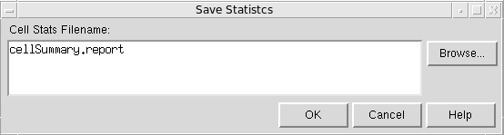
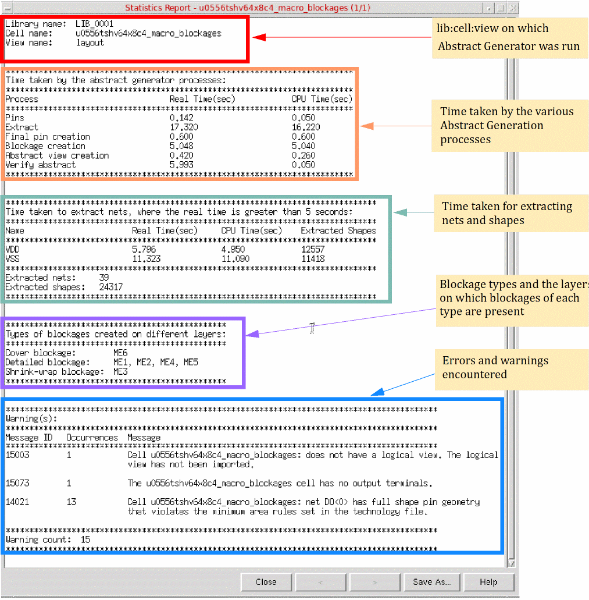

Viewing the Statistics Report in Abstract Generator
在 Abstract Generator 中查看统计报告
At any point during the Abstract Generator run, use the statistics report to see a report window that displays the abstract generation status and statistics until that point.
在 Abstract Generator 运行过程中的任意时刻，你都可以使用 statistics report 查看一个报告窗口，其中会显示截至当前的 abstract 生成状态与统计信息。
-
Choose File – Statistics Report.
选择 File – Statistics Report。
A separate statistics report is displayed for each selected cell.
每个所选 cell 都会显示一份独立的 statistics report。 -
The < and > buttons are useful when multiple cells are selected for abstract generation. Use these buttons to navigate between reports for the various cells. A new statistics report is generated for each Abstract Generator run.
当选择多个 cell 进行 abstract 生成时，< 与 > 按钮很有用。使用这些按钮可在各 cell 的报告之间切换。每次 Abstract Generator 运行都会生成新的 statistics report。 -
Click Save As. The Save Statistics window is displayed.
点击 Save As。系统会显示 Save Statistics 窗口。

-
Specify a different Cell Stats Filename. The default filename is
cellSummary.report.
指定不同的 Cell Stats Filename。默认文件名为cellSummary.report。 -
To select an existing file, click Browse and select the required file.
如需选择已有文件，点击 Browse 并选择所需文件。 -
Click OK.
点击 OK。
The statistics report is stored in the text format.
statistics report 会以文本格式存储。
The report provides the following information about the abstract generation run on each cell:
该报告为每个 cell 的 abstract 生成运行提供如下信息：

Related Topics
相关主题
Specifying Global Options in General Options form
Return to top